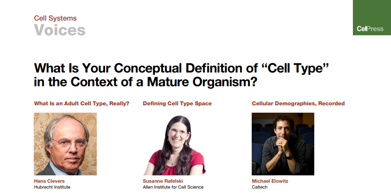
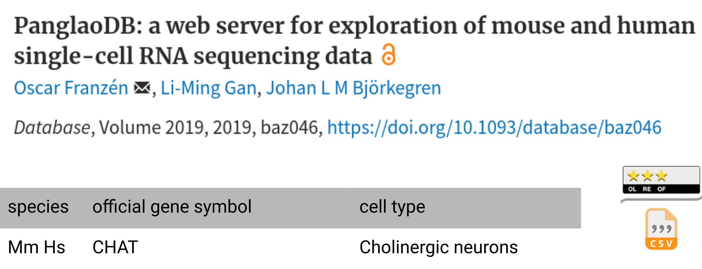

Building a biological knowledge graph via Wikidata with a focus on the Human Cell Atlas.
Student: Tiago Lubiana
Advisor: Prof. Helder Nakaya
Feb 23rd 2022 - São Paulo - SP


How many cell types have been described?
"2,311 terms covering all major cell types"
Resources using the Cell Ontology:
| Project | Description | CL use | URL |
|---|---|---|---|
| Cell Annotation Platform | An open annotation platform for scRNA-seq data | Uses CL and free text for cell-type annotation | http://celltype.info |
| EBI Single Cell Expression Atlas and Cambridge Cell Atlas | Open public repository for the exploration of single-cell gene expression data | Uses CL to annotate samples and cell types in tertiary analysis | https://www.ebi.ac.uk/gxa/sc and https://www.cambridgecellatlas.org |
| HCA Data Coordination Platform (DCP) | Community-generated, multi-omics, open data processed by standardized pipelines | Uses CL to annotate samples and cell types in tertiary analysis | https://data.humancellatlas.org |
| HuBMAP Common Coordinate Framework (CCF) ASCT+B tables | Expert-curated tables of human cell types, their markers and anatomical context | Maps all cell types to CL | https://hubmapconsortium.github.io/ccf-asct-reporter |
| cellxgene | An open annotation platform requiring annotation with ontology terms | Uses CL to annotate samples and cell types in tertiary analysis | https://chanzuckerberg.github.io/cellxgene |
| Tabula Muris | Curated whole mouse scRNA-seq atlas | Uses CL to annotate gross cell types, extending definitions with free text and markers | https://tabula-muris.ds.czbiohub.org |
| Monarch Initiative | A resource building ontologies of phenotypes and disease and using these to build an integrated collection of phenotype/disease to gene/variant associations | Defines cellular phenotypes and diseases | https://monarchinitiative.org |
| Gene Ontology | The world’s largest source of information on the function and location of gene products | Defines cell-type-specific organelles and biological processes | http://geneontology.org |
| CellTypist | An open-source tool for automated cell-type annotations as well as a working group in charge of curating models and ontologies | Maps all cell types to CL | https://www.celltypist.org |
| Human Immunology Project Consortium (HIPC) | A comprehensive, centralized research resource with the goal of facilitating a comprehensive understanding of the human immune system and its regulation | Works with CL to improve the representation of human immune cell types for use in data annotation | https://www.immuneprofiling.org/hipc |
Table from David Osumi-Sutherland et al, Nat. Cell Biol., 2021
OBO foundry - over 150 active biomedical ontologies

"All plasmacytoid dendritic cells are dendritic cells."


Wikidata: GUI live editing
OBO Foundry

- Steep learning curve
- Many namespaces (CL, GO ...)
- Single language (English)
- Built by experts (consistent)
Wikidata
- Quick onboarding
- Single namespace
- Support for +200 languages
- Built by everyone (diverse)
Wikidata is increasingly used by the life sciences community

Goals of the PhD project
- Find all classes of cells relevant to the Human Cell Atlas
- Organize the knowledge using knowledge graphs
- Advance Wikidata as a tool for the life sciences
Action research
"transformative change through the simultaneous process of taking action and doing research, which are linked together by critical reflection."
https://en.wikipedia.org/wiki/Action_research- Theoretical work on the concept of cell type
- Integration of canonical databases to Wikidata
- Development of a Wikidata-based biocuration and literature management framework
What do we mean by "cell type"?
Theoretical considerations on the concept of cell type

Practical considerations - Multi Level Theory

Our pragmatic definition
a cell type is any class of cells described by a domain expert
Introduction
Methods

SPARQL code
- Fully open-source system
- Based on: Python, Wikidata, GitHub and Markdown
- Increases throughput
- Provide analytics on reading
1. Obtain list of articles via Wikidata
2. Generate annotation station on demand (2/day)

4. Add articles read to online dashboard (automatic)
5. Screen articles for cell types
6. Add cell types to wikidata
- 2940 cell classes on Wikidata
- 2812 (95.6%) edited by User:TiagoLubiana
- 1668 (56.7%) created by User:TiagoLubiana.
Next steps
- Test Wikidata Bib with more people
- Connect better Cell Ontology and Wikidata
- Gather more people to curate cell types
- Connect Wikidata to R packages for scRNA-seq
Course work

Acknowledgements


Building a biological knowledge graph via Wikidata with a focus on the Human Cell Atlas.
Student: Tiago Lubiana
Advisor: Prof. Helder Nakaya
Feb 23rd 2022 - São Paulo - SP